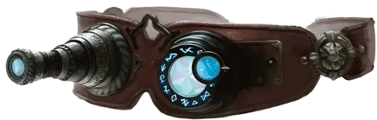

Визор Данота
Danoth’s Visor
Чудесный предмет, легендарный (требуется настройка)

Рекомендованная стоимость от 50 001 зм
Эти очки представляют собой прозрачные алмазные линзы в мифриловой оправе. Они использовались заклинателем Данотом Оро для обнаружения невидимых врагов и разведки местности издалека.
Дремлющий. Нося очки, находящиеся в дремлющем состоянии, вы можете нормально видеть в темноте, как магической, так и немагической, на расстоянии 60 футов. Кроме того, вы получаете преимущество на проверки Интеллекта (Расследование) и Мудрости (Восприятие), которые полагаются на зрение.
Пробуждённый. Когда визор Данота пробуждается, он приобретает следующие свойства:
- Вы можете видеть невидимых существ и объекты в пределах 60 футов от вас, как если бы они были видимыми, и ваш взор простирается на Эфирный план. Существа и предметы находящиеся на Эфирном плане кажутся призрачными и полупрозрачными.
- Бонусным действием вы можете произнести командное слово и использовать очки, чтобы видеть сквозь твердую материю. Это зрение имеет радиус 60 футов и длится 1 минуту. Для вас твердые объекты в пределах этого радиуса кажутся прозрачными. Зрение может проникать сквозь 1 фут камня, 1 дюйм обычного металла или до 3 футов дерева или грязи. Более толстые материалы блокируют зрение, как и тонкий лист свинца. Это свойство не может быть использовано снова до следующего рассвета.
- Бонусным действием вы можете произнести командное слово, чтобы переключить очки в режим подзорной трубы. В этом режиме существа и объекты, видимые через очки, увеличиваются в два раза. Повторное произнесение командного слова возвращает очки в нормальное состояние.
Возвышенный. Когда Визор Данота достигает возвышенного состояния, он приобретает следующие свойства:
- Вы автоматически обнаруживаете иллюзии, которые вы можете видеть, и автоматически преуспеваете в спасбросках против них. Кроме того, вы видите яркую ауру вокруг любого существа, которое не находится в своей истинной форме.
- Действием вы можете наложить заклинание преграда магии [antimagic field] с помощью визора. Это свойство не может быть использовано снова до следующего рассвета.